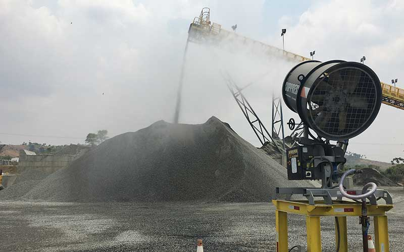
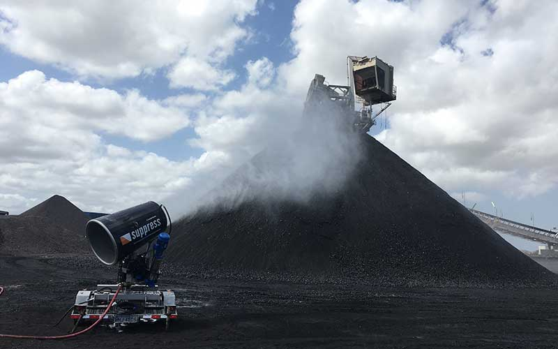
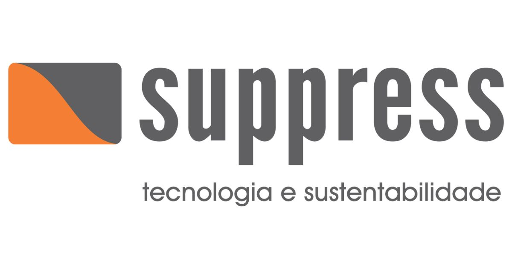
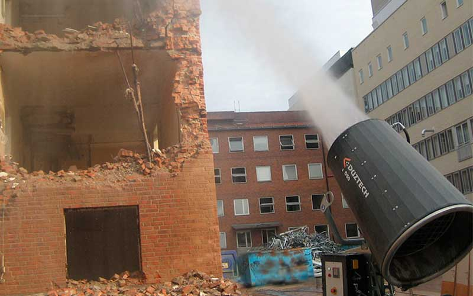
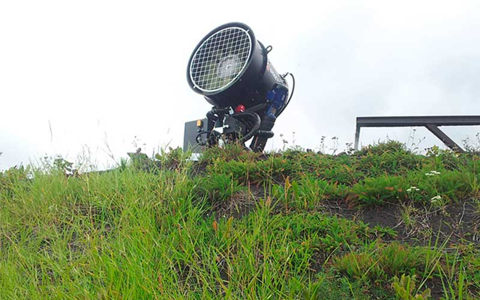

Áreas de Atuação da Suppress
Controle de poeira onde a emissão é crítica: mineração, siderurgia, portos, construção e indústrias pesadas.

Controle de Poeira em Mineração
A mineração é o setor com maior geração de particulado no Brasil. Pátios de estocagem, britagem, peneiramento, carregamento e descarga de minério geram nuvens de poeira que podem se estender por quilômetros, afetando comunidades vizinhas e trabalhadores.
O impacto vai além do ambiental: autuações do IBAMA, embargos pela FEAM (MG) e processos em órgãos estaduais são frequentes em mineradoras sem sistema de supressão eficiente. A NR-22 (Segurança e Saúde na Mineração) exige controle de agentes físicos como o particulado.
Os canhões de névoa Suppress SP-55, SP-65, SP-150 e Alta Vazão são projetados especificamente para os desafios da mineração: alcance de até 150m, rotação 360°, operação contínua em ambientes de alta poeira e integração com estações meteorológicas para acionamento automático.
redução média de emissão de particulado em operações de mineração após instalação dos canhões de névoa Suppress

Controle de Poeira em Siderurgia
Em aciarias, alto-fornos, pátios de coque e de matéria-prima, a emissão de particulado é um desafio constante. O pó de óxido de ferro, coque e cal gerado nas operações siderúrgicas é altamente nocivo e sujeito a rígida regulamentação ambiental.
Com processos contínuos, 24 horas por dia, a siderurgia exige equipamentos confiáveis e com alta disponibilidade. Os canhões Suppress são construídos para operação contínua em ambientes agressivos com temperaturas extremas e partículas metálicas.
redução de reclamações de vizinhos registrada em siderúrgica de MG após instalação de SP-55 e SP-65 nos pátios de estocagem

Portos, Pátios e Terminais
Terminais portuários que movimentam granéis sólidos (minério, carvão, soja, cimento) são fontes significativas de emissão de particulado. A proximidade com áreas urbanas e a exposição de trabalhadores portuários intensifica os riscos e as exigências regulatórias.
A ANTAQ e os órgãos ambientais estaduais exigem planos de controle de emissões para licenciamento de terminais. Os canhões SP-35t, SP-65 e SP-150 são ideais para cobrir grandes pátios e proteger as operações de movimentação.
conformidade ambiental obtida por terminal de granéis em SP após implantação do sistema Suppress — zero autuações nos últimos 24 meses

Controle de Poeira em Obras — Construção Civil e Demolição
Obras de grande porte em áreas urbanas enfrentam crescente pressão de moradores, órgãos ambientais e prefeituras. A emissão de poeira de concreto, areia e solo em demolições pode gerar multas, embargos e ações judiciais em poucos dias.
O SP-15 e SP-35 são ideais para canteiros de obra: compactos, com alimentação 220V, baixo consumo de água e fácil reposicionamento. A versão em carretinha permite uso em diferentes frentes de obra sem infraestrutura permanente.
tempo médio entre a solicitação e a entrega técnica em obras de construção — resposta rápida para adequação imediata

Indústrias em Geral
Além dos setores tradicionais, a Suppress atende indústrias de cimento, celulose, agrícolas, pátios de sucata, usinas de asfalto, aterros sanitários e qualquer operação onde o controle de particulado seja crítico para compliance ambiental e segurança.
Cada aplicação tem suas especificidades — granulometria do particulado, distâncias, condições de vento e restrições elétricas. Nossa equipe de engenharia dimensiona a solução correta para cada cenário, independente do setor.
setores industriais diferentes atendidos com soluções customizadas — nossa expertise vai além da mineração
Qual é o seu desafio de poeira?
Independente do setor ou tamanho da operação, temos engenheiros especializados para dimensionar a solução ideal e calcular o ROI para você.